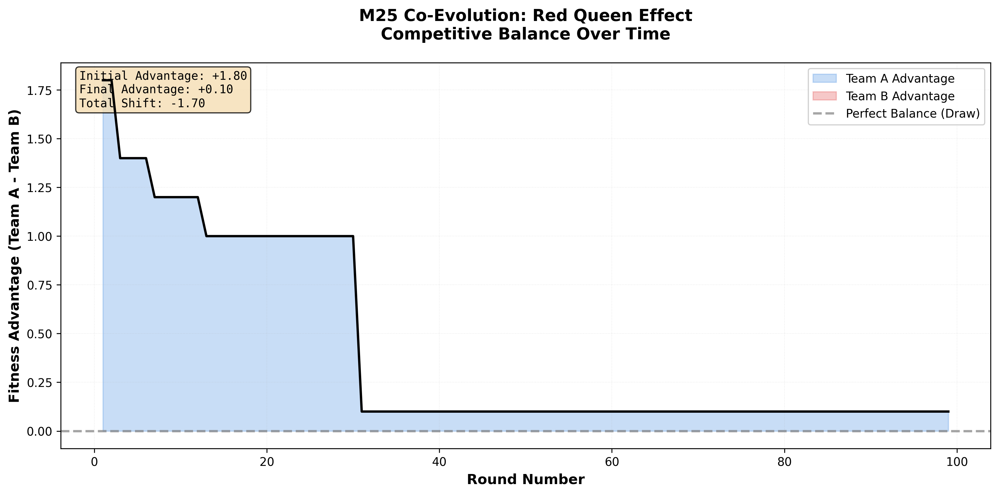
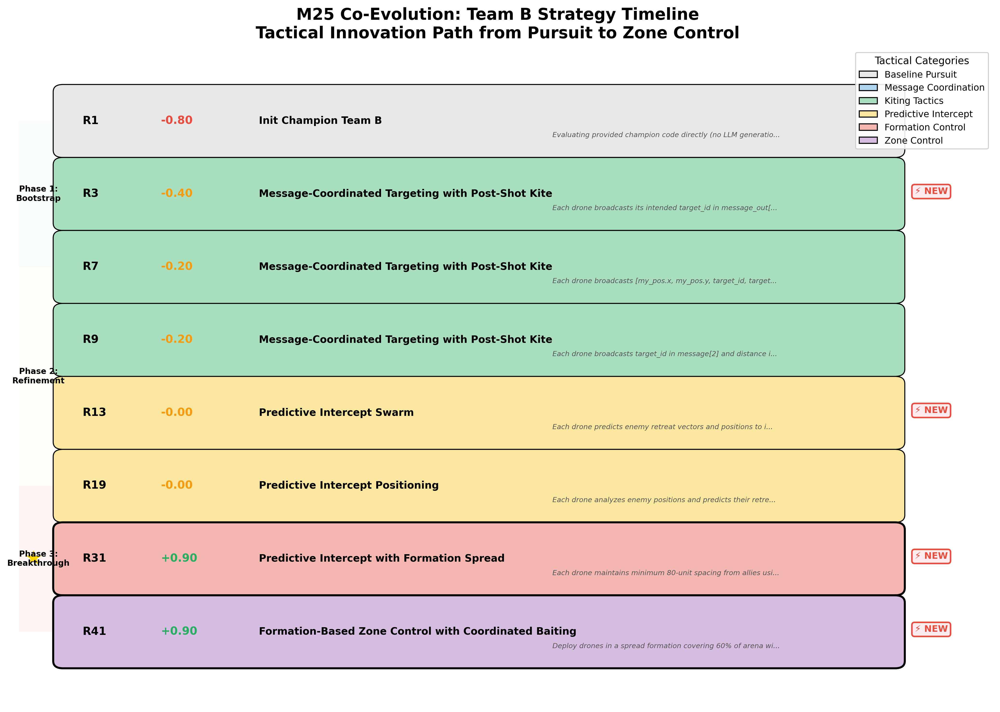
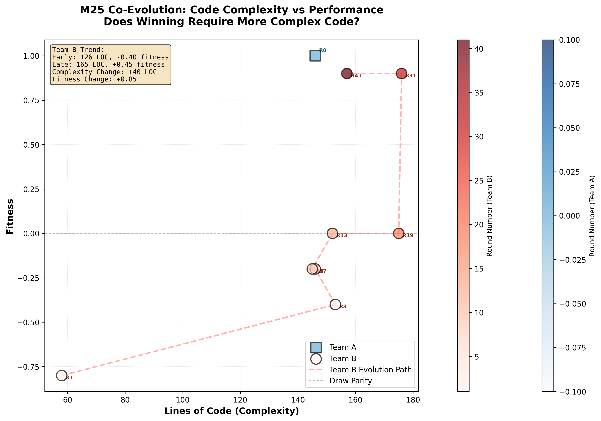

Human engineers hand-write C++ logic.
Pros: Reliable, deterministic
Cons: Incredibly slow. Struggles with emergent multi-agent edge cases.
One-shot LLM prompts.
Pros: Fast prototyping
Cons: Deeply brittle. AI hallucinates logic, ignores constraints, crashes.
LLMs write code, then survival of the fittest in GPU-accelerated combat.
Pros: Discovers emergent tactics, adapts to opponents
Cons: Requires evolutionary infrastructure
LLM-generated C++ × GPU-accelerated combat × $10 budget
Yevgeniy Leybzon | DroneEvolution | May 2026
struct AllyState {
float x, y; // Position
int cooldown; // Visible to teammates
bool alive;
};
struct EnemyState {
float x, y; // Position visible
bool alive;
// cooldown HIDDEN - must be inferred!
};
while(true)) that hang GPU simulations// LLM writes:
while(searching) { ... }
// Orchestrator injects:
int _guard = 0;
while(searching) {
if(++_guard > 1000) break;
...
}
The Champion
204 LOC
+1.0 fitness
Perfect 30/30 win rate
M22 Gen 33 champion
100 generations of evolution
Claim-Arbitrated Targeting + Kiting
The Baseline
66 LOC
-0.8 fitness
Losing 8/10 matches
pursuit_v1 baseline
Direct nearest-enemy pursuit
No coordination, no tactics
The Hypothesis: Can an adaptive LLM guide a weak team to overthrow 100 generations of evolution in just 100 rounds of co-evolution?


Power Law: Most improvements were ±0.1-0.2. Formation Spread caused a +1.1 jump in one round.
35% faster learning when facing a strong, adaptive opponent

| AlphaStar / OpenAI Five | SwarmEvolve (M25) | |
|---|---|---|
| Method | Deep Reinforcement Learning | LLM-Guided Evolution |
| Compute | $1M+, hundreds of GPUs, weeks/months | $10 API credits, 1.5 hours, single CPU/GPU |
| Tactics Discovered | Punctuated equilibrium, spatial control, coordination | ✓ Same emergent behaviors |
| Interpretability | Black-box neural networks | Human-readable C++ + LLM strategy journal |
| Reproducibility | Expensive to replicate | Single command: python3 scripts/evolve_coevolve.py |
Because the engine is deterministic, we can trace every decision. This is LLM-generated code, not human-written.
✓ Open Source
✓ Cross-platform (macOS ARM / Linux NVIDIA GPU)
✓ Single-command reproduction
Reproduce M25:
python3 scripts/evolve_coevolve.py --rounds 100